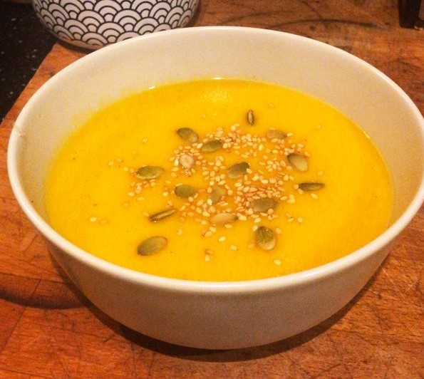

Velouté de Potiron et Carottes

ingrédients
- 1 kg de potiron
- 500g de carotte
- 2 pommes de terre
- 1 gouse d'ail
- 1 oignon
- 1/2l de lait
- 1/2l de bouillon de volaile
- 1 cuillière a soupe d'huile d'olive
- persil
- poivre
- sel
- muscade
- 10 cl de crème liquide
Ustensiles
- 1 louche
- 1 mixeur plongeant
- 1 couteau
- 1 économe
- 1 mixeur
- 1 dénoyauteur
préparation !
- Éplucher et couper en dés le potiron, les pommes de terre,
les carottes en rondelles
- Emincer l'ail et l'oignon.
- Faire suer l'oignon dans l'huile d'olive.
- Ajouter tous les légumes et l'ail puis verser le bouillon
et le lait.
- Saler, poivrer, "muscader" et laisser cuire environ une
trentaine de minutes.
- Mixer le tout (ajouter éventuellement la crème) et rectifier
l'assaisonnement si nécessaire.
| Dificulté : |
moyen |
| preparation : |
30 minutes |
| temps total |
1H |